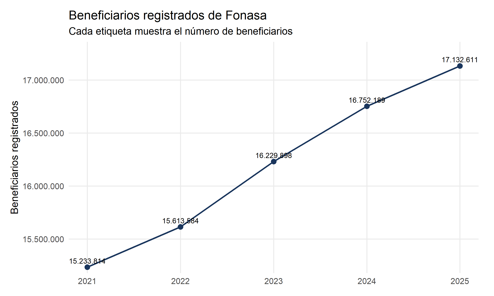
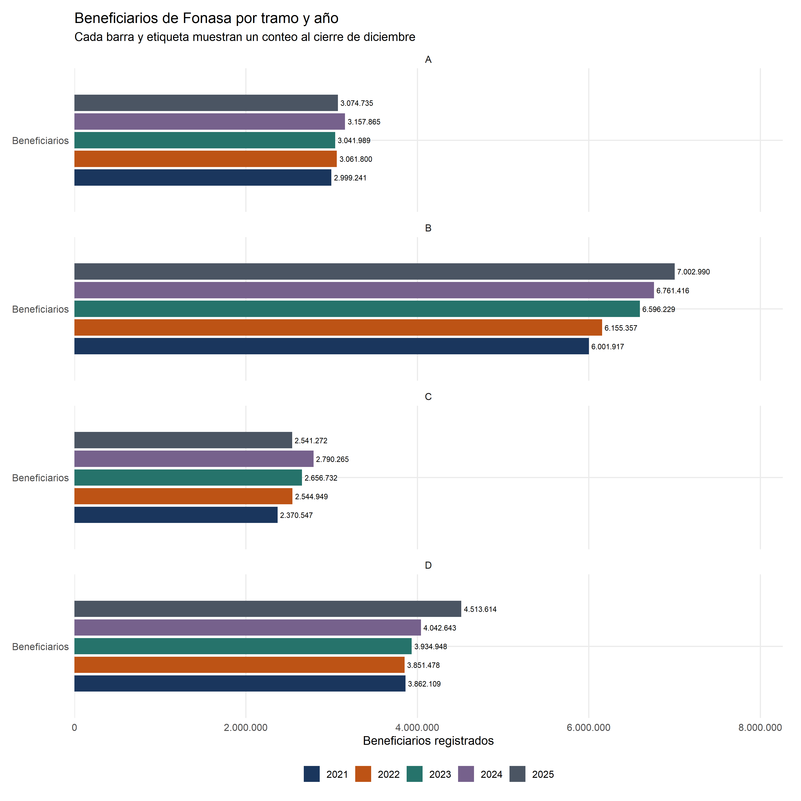
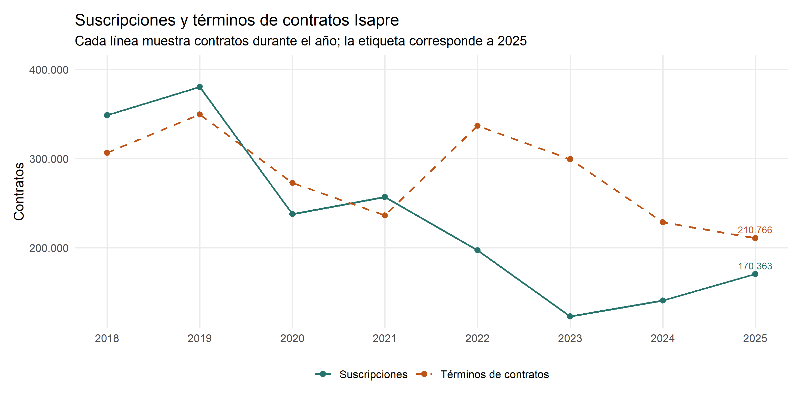
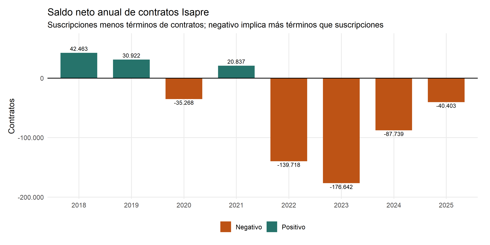

¿Cómo cambió el volumen de beneficiarios de Fonasa? Esta sección describe el alcance que efectivamente permiten los archivos disponibles.
Resultado calculado
Los conteos de los archivos pasan de 15.233.814 en diciembre de 2021 a 17.132.611 en diciembre de 2025, una variación de 12,5%.
Evolución del total
Código
# Total anual: cada etiqueta muestra el número de beneficiarios registrados.g_total <- t |>mutate(etiqueta=n(beneficiarios))print(ggplot(g_total,aes(anio,beneficiarios))+geom_line(colour=paleta[1],linewidth=.9)+geom_point(colour=paleta[1],size=2.5)+geom_text(aes(label=etiqueta),vjust=-.7,size=3)+scale_x_continuous(breaks=2021:2025)+scale_y_continuous(labels=label_number(big.mark='.',decimal.mark=','),expand=expansion(mult=c(.03,.12)))+labs(title='Beneficiarios registrados de Fonasa',subtitle='Cada etiqueta muestra el número de beneficiarios',x=NULL,y='Beneficiarios registrados'))

Fuente: archivos Fonasa aportados al proyecto; suma de conteos por categorías. Cada etiqueta es un número de beneficiarios.
Cómo leer el gráfico. El registro aumenta todos los años de la serie: pasa de 15.233.814 beneficiarios en 2021 a 17.132.611 en 2025, un alza de 12,5%. Es un conteo de personas registradas al cierre de diciembre. No mide cuántas atenciones recibieron ni demuestra que el aumento provenga de personas que dejaron una Isapre.
Composición por tramo
Los paneles permiten comparar los cinco cortes de diciembre dentro de cada tramo, sin sumar visualmente segmentos. Cada barra muestra un número de beneficiarios, no un porcentaje ni un flujo entre tramos.
Código
# Barras agrupadas y horizontales: un panel por tramo, cinco cortes anuales comparables.g_tramos <- f |>mutate(anio=factor(anio),grupo='Beneficiarios',etiqueta=n(beneficiarios))print(ggplot(g_tramos,aes(grupo,beneficiarios,fill=anio))+geom_col(position=position_dodge(width=.78),width=.68)+geom_text(aes(label=etiqueta),position=position_dodge(width=.78),hjust=-.08,size=2.6,show.legend=FALSE)+facet_wrap(~tramo,ncol=1)+coord_flip()+scale_fill_manual(values=c(paleta,'#4b5563'))+scale_y_continuous(labels=label_number(big.mark='.',decimal.mark=','),expand=expansion(mult=c(0,.18)))+labs(title='Beneficiarios de Fonasa por tramo y año',subtitle='Cada barra y etiqueta muestran un conteo al cierre de diciembre',x=NULL,y='Beneficiarios registrados',fill='Año'))

Tramos administrativos de Fonasa. Cada barra y etiqueta muestran una cantidad de beneficiarios al cierre de diciembre; no representan flujos entre tramos.
Cómo leer el gráfico. El tramo B es el grupo más numeroso y también el que más crece en términos absolutos: pasa de 6.001.917 a 7.002.990 beneficiarios. Los cuatro paneles deben leerse como fotografías anuales de cada tramo. Una persona puede cambiar de tramo entre mediciones, pero estos archivos agregados no permiten seguir ese recorrido individual.
Movimientos de contratos Isapre
Las suscripciones y los términos de contratos son movimientos registrados durante el año. “Término de contrato” reemplaza la etiqueta administrativa “desahucio”: no atribuye una causa, no supone que la decisión fue voluntaria y no permite identificar el destino de la persona. El saldo neto es la resta entre ambos movimientos.
Código
# Suscripciones, términos y saldo neto de contratos, sin inferir el destino ni la causa de cada término.g_movimientos <- movimientos_isapres |>filter(anio>=2018) |>select(anio,Suscripciones=suscripciones,`Términos de contratos`=desahucios) |>pivot_longer(-anio,names_to='tipo',values_to='contratos')print(ggplot(g_movimientos,aes(anio,contratos,colour=tipo,linetype=tipo))+geom_line(linewidth=.8)+geom_point(size=2)+geom_text(data=filter(g_movimientos,anio==2025),aes(label=n(contratos)),vjust=-.7,show.legend=FALSE,size=3)+scale_colour_manual(values=c(Suscripciones=paleta[3],`Términos de contratos`=paleta[2]))+scale_linetype_manual(values=c(Suscripciones='solid',`Términos de contratos`='dashed'))+scale_x_continuous(breaks=2018:2025)+scale_y_continuous(labels=label_number(big.mark='.',decimal.mark=','),expand=expansion(mult=c(.05,.14)))+labs(title='Suscripciones y términos de contratos Isapre',subtitle='Cada línea muestra contratos durante el año; la etiqueta corresponde a 2025',x=NULL,y='Contratos',colour=NULL,linetype=NULL))

Fuente: libro de cartera Isapres aportado al proyecto. Las líneas representan movimientos de contratos registrados durante cada año.
Cómo leer el gráfico. Hasta 2021 las suscripciones y los términos se mantienen relativamente próximos. Desde 2022 los términos superan a las suscripciones; en 2025 se registran 170.363 suscripciones y 210.766 términos. “Término” no significa necesariamente abandono voluntario ni traslado a Fonasa: la base agregada no entrega la causa ni el destino.
Saldo neto de contratos Isapre
Código
g_neto <- movimientos_isapres |>filter(anio>=2018) |>mutate(etiqueta=n(incremento_neto),color=if_else(incremento_neto>=0,'Positivo','Negativo'))print(ggplot(g_neto,aes(factor(anio),incremento_neto,fill=color))+geom_col(width=.7)+geom_hline(yintercept=0)+geom_text(aes(label=etiqueta),vjust=if_else(g_neto$incremento_neto>=0,-.5,1.3),size=3)+scale_fill_manual(values=c(Positivo=paleta[3],Negativo=paleta[2]))+scale_y_continuous(labels=label_number(big.mark='.',decimal.mark=','),expand=expansion(mult=c(.12,.15)))+labs(title='Saldo neto anual de contratos Isapre',subtitle='Suscripciones menos términos de contratos; negativo implica más términos que suscripciones',x=NULL,y='Contratos',fill=NULL))

Fuente: elaboración propia con el libro de cartera Isapres. Saldo neto = suscripciones menos términos de contratos.
Cómo leer el gráfico. Una barra positiva indica más suscripciones que términos durante el año; una barra negativa indica lo contrario. El saldo fue negativo desde 2022 y llegó a −40.403 contratos en 2025. Este saldo resume movimientos administrativos anuales y puede no coincidir exactamente con el cambio del stock de cotizantes entre dos cierres.
Lectura y limitaciones
El aumento describe un mayor volumen de cobertura registrado. No demuestra migración desde Isapres, mayor uso de prestaciones ni insuficiencia presupuestaria. Para medir cambios individuales se necesita un registro longitudinal compatible o estadísticas oficiales de altas y bajas por origen.
Los CSV tienen conteos agregados por categorías; las filas no representan personas individuales. No incluyen una renta imponible individual para desarrollar el análisis propuesto inicialmente.
Las claves repetidas detectadas en 2018–2020 requieren aclaración documental. Esos años se conservan y auditan, pero se excluyen de los gráficos, sin eliminar registros de los originales.
Se homologaron los nombres de tramo y conteo para 2021–2025. No se detectaron claves repetidas ni conteos faltantes o negativos en esos cinco archivos. Esto es una validación interna, no una certificación externa de cobertura.
No se restan los stocks de Fonasa e Isapres para estimar flujos. El libro de Isapres permanece disponible en la carpeta original para una futura conciliación.
El gráfico de Isapres muestra movimientos agregados de contratos. No permite seguir a una persona entre sistemas, identificar la causa de cada término ni probar que un término termine en Fonasa.
Esta sección es contexto del proyecto previo, no una evaluación sanitaria ni causal del plan de 2026.
Los originales fueron aportados por el autor. Falta conciliar cada edición con su descarga institucional exacta; los totales se presentan como sumas de esos archivos. El diccionario disponible no coincide plenamente con sus columnas.